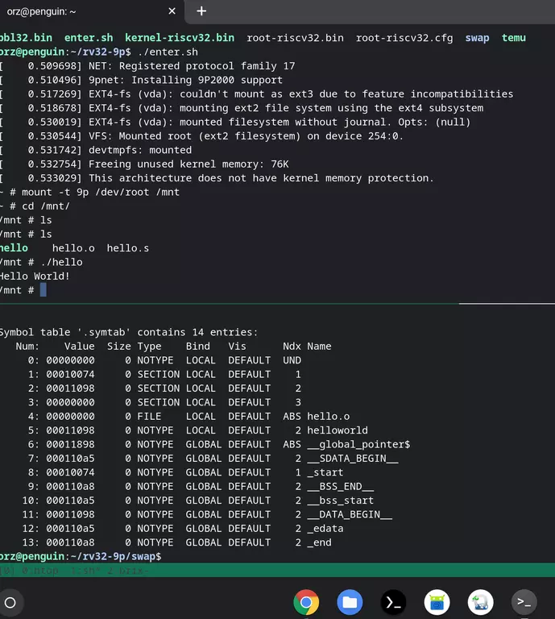

缘由
我一直想构建一个自己的forth,之前用python实现过,但是
社区一些高级特性都是用汇编语言实现的，因此我的python
实现总是有些隔靴搔痒，所以我希望有一天能用汇编语言实现
自己的forth,这方面社区有一个jonesforth 注释很完整，使用
x86汇编实现，并且是教学目的，本来很适合的，但是x86汇编
细节实在太多了，所以现在看中了专注简洁的riscv.
另外一个原因是我发现使用汇编语言表示的算法过程逻辑对于
理解更容易，而同上述原因一样，x86实在很不适合，之前最简洁
的应该是mips, 至今我们还能在周围的路由器里大量见到它们，
但是mips也有一些自己的wirk,比如延迟槽啥的,所以既然今天
riscv已经开始崛起了，没理由不用它来作为学习平台.
但是一旦我进入学习之后，发现一些很现实的问题:
+ 工具链太大，而且都在墙外，拖下来很慢，编译也慢
+ 主流发行版(我用的ubuntu)和工具默认都支持rv64 而忽略了rv32
+ 但是官方提供的riscv-reader手册却是用rv32i作为教学目标的
基于此，我打算构建一个最小化，好编译，并且支持rv32为目标的
汇编学习环境
郑重声明
我使用的是 Linux系统上的vim
如果你对这俩不熟悉，可能未必觉得我这个构建目标有用
同时需要确保你的系统上有gcc那一套工具链 在debian系的发行版上直接用
sudo apt install -y build-essential
来安装
构建步骤
模拟器
模拟器我选择使用 bellard的 tinyemu
这是qemu的作者，质量有口碑，并且此人喜欢写小巧迷你的工具，符合我
的口味, 顺便说下，他开发的tinycc社区有人支持了riscv 但是我没使用过
也不确认是否支持汇编
构建
首先,在官方页面下载最新源码，我这里是
wget https://bellard.org/tinyemu/tinyemu-2019-12-21.tar.gz
其次，需要确保自己的系统上有安装libcurl与libssl的开发者版本
debian系的发行版可以使用下面命令安装
sudo apt install -y libcurl4-dev libssl-dev
最后，需要修改编译配置，默认的tinyemu所有选项都打开了，但是实际
上我们的用途根本不需要 x86/128bit/sdl 这些特性
具体步骤是打开 Makefile 文件
将以下选项注释掉
- CONFIG_SDL=y
- CONFIG_INT128=y
- CONFIG_X86EMU=y
注释就是在这些行前面加 #
然后执行 make
编译成功以后会得到 temu 和 splitimg
随便复制到哪里都可以
编译工具
这个我们选择binutils 并且我们只需要as和ld 以及target只支持rv32部分
构建
这里我们使用中国境内的gitee镜像做克隆仓库, 不放心的同学可以使用
同时需要注意的是编译依赖系统已安装过gnu工具链和bison这些
下面是具体的编译
git clone https://gitee.com/mirrors/riscv-binutils-gdb.git
cd riscv-binutils-gdb
mkdir build
cd build
../configure --target=riscv32-unknown-elf \
--enable-languages=c \
--disable-shared \
--disable-threads \
--disable-multilib \
--disable-gdb \
--disable-libssp \
--disable-gprof \
--disable-gold \
--disable-binutils \
--disable-intl \
--disable-libdecnumber \
--with-newlib \
--with-arch=rv32ima \
--with-abi=ilp32 \
--prefix=/opt/riscv32
make -j8 MAKEINFO=true && make install
成功以后会得到 /opt/riscv32 目录下的rv32工具链 里面有as和ld 刚好足够
编译和链接你的汇编持续拉
使用
tinyemu的官方提供了一系列的预置的镜像，都很小巧，建议直接去官方下载，
对于我们的目标而言，我们需要使用他的riscv32那个镜像，同时要使用他的
9p支持，这里解释下，9p协议是个走网络的文件系统协议，tinyemu的镜像里
有配置演示如何启用9p,启用以后，我们在模拟器的linux环境里用
mount -t 9p /dev/root /mnt 就可以把外部host配置好的目录挂载到模拟器
里面，这样我们就可以在外部host开发我们的汇编代码，并使用之前编译好的
binutils工具编译并链接成最终的elf可执行程序,放在9p挂载的目录里，然后
在模拟器里面直接执行啦
如果你是x86的环境，我在我的百度网盘里提供了一个编译好的模拟器供使用
链接: https://pan.baidu.com/s/18NSlnMD8cqKo1jPvgkBNNg 提取码: wvfz
当然本文描述的构建步骤在arm上也完全适用，因为我在自己的arm版chromebook
上也构建成功了 步骤完全一致
下面放一个我的arm版chromebook上的运行截图证明

Comments !